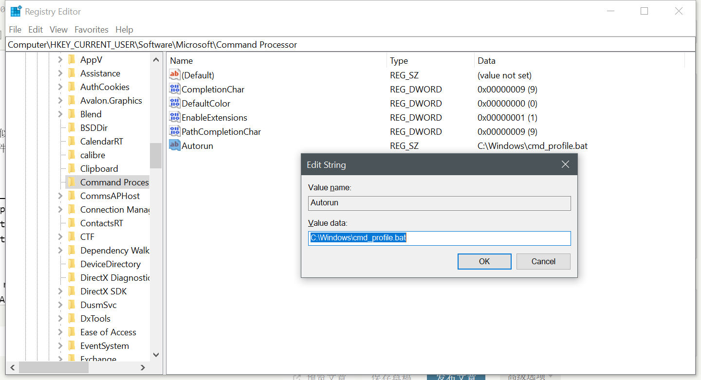

macOS/Linux/windows设置终端代理
通过设置代理来让终端流量走代理端口(socks5适用于大部分的流量，有些程序不走http)，在终端输入：
export all_proxy=socks5://127.0.0.1:1080
取消代理：
unset all_proxy
也可以通过创建alias来设置一个“快捷命令”运行此命令：
alias proxy='export all_proxy=socks5://127.0.0.1:1080'
alias unproxy='unset all_proxy'
然后开启代理就输入：
proxy
取消代理输入：
unproxy
设置只对当前窗口有效，关闭后取消。
可以通过bash文件保存alias，快速设置/取消proxy。
macOS
打开~/.bash_profile, ~/.bashrc, 或者 ~/.profile，The difference between these files is (primarily) when they get read by the shell. If you're not sure where to put it, ~/.bashrc is a good choice.
此文件一般不存在，可新建：
vim ~/.bashrc
将下面代码加入文件：
alias proxy='export all_proxy=socks5://127.0.0.1:1080 && export http_proxy=http://127.0.0.1:1082 && export https_proxy=http://127.0.0.1:1082'
alias unproxy='unset all_proxy && export http_proxy= && export https_proxy='关闭文件后，重新载入配置：
source ~/.bash_profile
Linux
打开~/.bashrc：
vim ~/.bashrc
将下面代码加入文件：
alias proxy='export all_proxy=socks5://127.0.0.1:1080 && export http_proxy=http://127.0.0.1:1082 && export https_proxy=http://127.0.0.1:1082'
alias unproxy='unset all_proxy && export http_proxy= && export https_proxy='关闭文件后，重新载入配置：
source ~/.bashrc
运行命令测试alias是否生效：
proxy
以上就是Linux设备的终端代理设置。
windows
cmd 中用 set http_proxy 设置
Git Bash 中用 export http_proxy 设置
set http_proxy=http://127.0.0.1:1082
set https_proxy=http://127.0.0.1:1082
恢复
set http_proxy=
set https_proxy=
使用 doskey 命令建立类似 alias 功能：
新建 cmd_profile.bat 文件内容如下：
@echo off
doskey phttp = set http_proxy=http://127.0.0.1:1082
doskey phttps = set https_proxy=http://127.0.0.1:1082
doskey unphttp = set http_proxy=
doskey unphttps = set https_proxy=打开注册表：win + r 输入 regedit，定位到 HKEY_CURRENT_USER\Software\Microsoft\Command Processor\,右键 new - string value，重命名为：Autorun，值设置为 bat 文件路径，推荐放置在 C 盘目录下：

从新打开 cmd 测试命令是否生效。
查看当前IP：
curl ipecho.net/plain ; echo